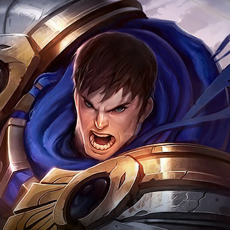
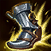
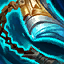
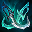

蓋倫 蒂瑪西亞之力
技能圖示與簡介
-
被動｜堅韌
如果蓋倫近期內未受到傷害或是被敵人的技能影響的話，每秒將會回復一定比例的總生命。
-
Q｜致命打擊
蓋倫的跑速獲得大量提升，並解除身上的所有緩速效果。他的下一次普攻會重傷敵人，造成額外傷害並將其沉默。
-
W｜勇氣
蓋倫可通過擊殺敵軍來被動增加物防和魔防。他也可以啟動這項技能來短暫獲得護盾與韌性，與持續更久的少量傷害減免效果。
-
E｜審判
蓋倫在他的身邊迅速旋轉大劍，對附近敵人造成物理傷害。
-
R｜蒂瑪西亞制裁
蓋倫召喚蒂瑪西亞之力，試圖處決一名敵方英雄。
技能加點 ＆ 召喚師技能
技能加點順序R > E > Q > W
召喚師技能閃現 ＋ 點燃（也可帶傳送）
對線重點一級用 Q 上前換血、E 轉圈清線；被遠程角壓時先補防禦，靠被動回血慢慢耗。
建議符文

征服者
主樹：精準
在攻擊敵方英雄時獲得適性之力的堆層。在達到12層後，將你對英雄造成的一部分傷害轉化為等數值的回復量。
副樹：意志 符文請依對局與對手調整，這裡是當前主流方向。
核心裝備

狂戰士護脛
步履破壞者
幻影之舞- 史特拉克手套
- 振奮盔甲
戰術解析
用 E 疊征服者，Q 沉默後接 R 收頭；分推時留意對手控場，別把 W 減傷提前交掉。
即時數據 ＆ 更多資料
勝率、選用率等即時統計請看上面兩個外部網站（本站既有的資料來源）；本頁提供的是整理後的建議方向。